1 Quién es quién
Cada persona ve una aplicación distinta. No es que haya botones escondidos: es que a un técnico no le hace falta la pantalla de copias de seguridad, y a recepción no le hace falta ninguna más que «avisar». Esto es lo que hay montado en el Hotel Benalma.
Qué puede hacer cada uno
Cada papel incluye lo que puede hacer el anterior:
- Sólo avisar — da partes y ve los suyos. Recepción avisa de que la 412 no tiene agua caliente y ahí acaba su trabajo.
- Técnico — recibe partes, escribe lo que va haciendo, sube fotos y los cierra. Ve los de su departamento.
- Responsable — además reparte el trabajo de su departamento, cambia plazos y prioridades, y saca informes.
- Administrador — además maneja el equipo, las ubicaciones, los catálogos, las copias de seguridad y la papelera.
2 Entrar la primera vez
La aplicación se abre en el navegador del móvil, con la dirección que os haya dado sistemas. No hace falta instalar nada para empezar.
-
Abre la dirección
La primera vez conviene guardarla en la pantalla de inicio del móvil: en el menú del navegador, «Añadir a pantalla de inicio». A partir de ahí se abre como cualquier otra aplicación, a pantalla completa.
-
Escribe tu usuario —o tu correo— y la contraseña
Vale cualquiera de los dos: david o david.sstt@hotelbenalma.com. No importan las mayúsculas ni las tildes: «recepción» y «recepcion» son la misma cuenta.
Las cuentas de puesto —recepcion, pisos— entran sólo con el usuario: son de quien esté de turno y no tienen correo de nadie.
Si no te sabes la contraseña, abajo hay «He olvidado la contraseña»: la pides y Daniel te da un código de seis cifras.
-
Toca «Entrar»
La sesión dura 30 días en ese móvil. No hay que entrar cada mañana.
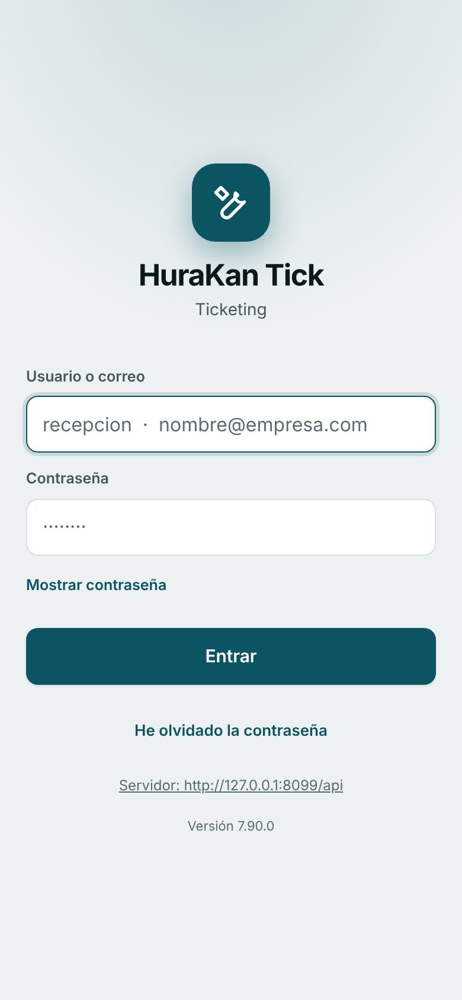
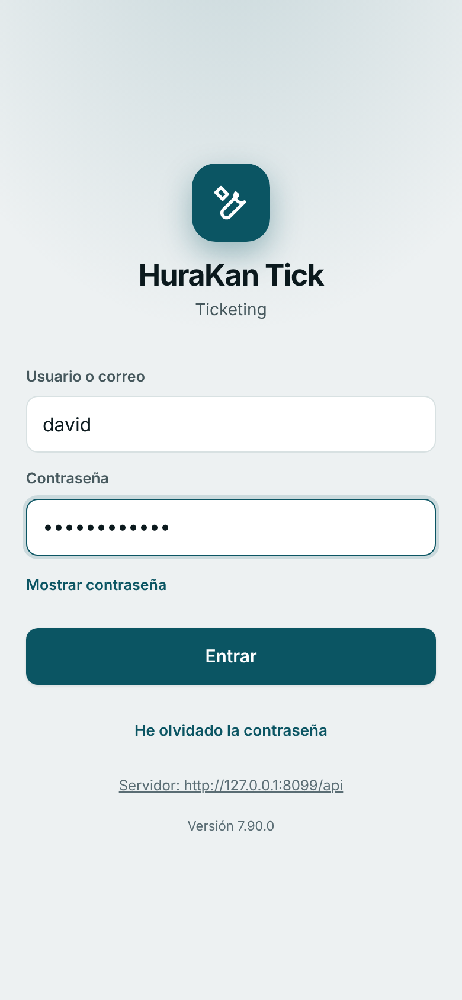
3 El inicio, de un vistazo
Lo primero que aparece al entrar. Está pensado para responder de un vistazo a «¿qué tengo hoy?», sin tocar nada.
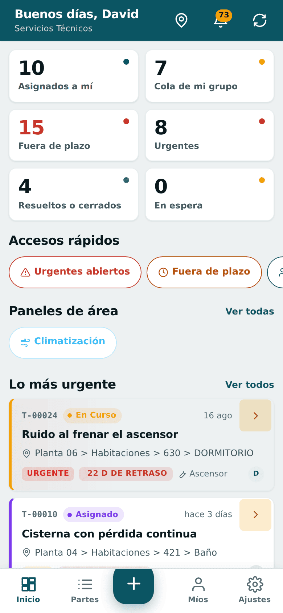
Los seis contadores
Cada uno se toca y lleva a esa lista ya filtrada:
- Asignados a mí — lo que te toca a ti, con nombre y apellido.
- Cola de mi grupo — lo que ha entrado a tu departamento y todavía no tiene a nadie. De ahí se coge trabajo cuando terminas lo tuyo.
- Fuera de plazo — en rojo, porque es lo que se está pasando de fecha.
- Urgentes — prioridad alta o crítica, sin cerrar.
- Resueltos o cerrados — lo que ya está.
- En espera — parados por algo: falta un repuesto, hay que esperar a que salga el cliente de la habitación.
Accesos rápidos
Debajo de los contadores hay botones que llevan a las búsquedas de siempre —«Urgentes abiertos», «Fuera de plazo»— y los atajos que cada uno se haya guardado. Si repites una búsqueda todas las semanas, guárdala como atajo y aparece aquí.
Lo más urgente
La lista de abajo enseña los partes que más corren, ya ordenados. Cada tarjeta lleva el número, el estado, dónde es, cuánto lleva de retraso y quién lo tiene. Se toca y se abre.
4 Moverse por la aplicación
Toda la navegación está en la barra de abajo, al alcance del pulgar. Son cinco sitios y no hay más.
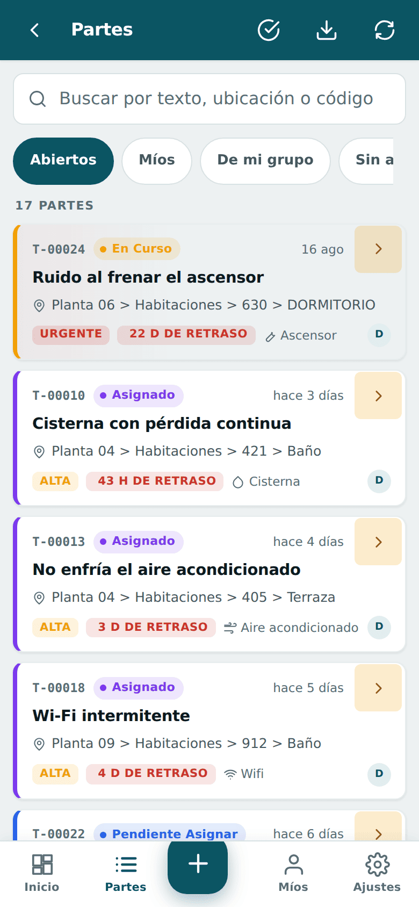
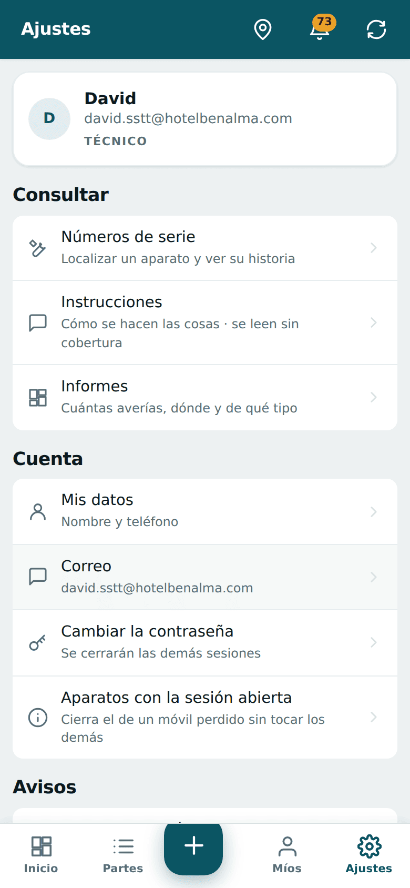
- Inicio — lo que acabamos de ver.
- Partes — la lista completa, con buscador y filtros.
- + — el botón grande del centro: dar un parte nuevo. Está en medio porque es lo que más se usa.
- Míos — sólo los tuyos, sin filtrar nada.
- Ajustes — tu cuenta, la apariencia, y lo que te deje tu papel.
5 Un parte por dentro
Esta es la pantalla donde se trabaja de verdad. Conviene reconocer sus partes antes de empezar a tocar.
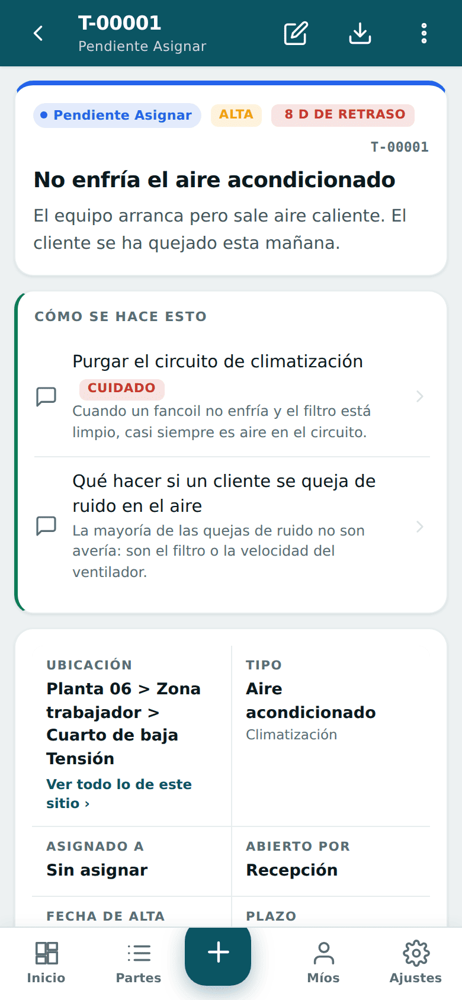
- Arriba — el estado, la prioridad y, si se ha pasado de fecha, cuánto lleva de retraso.
- El número — «T-00024». Es lo que se dice por radio: «el veinticuatro».
- Cómo se hace esto — si el hotel tiene una instrucción para ese tipo de avería, aparece aquí sola. No hay que ir a buscarla, y se lee aunque no haya cobertura.
- Ubicación — la ruta completa, de la planta al rincón. Debajo, «Ver todo lo de este sitio» enseña el histórico de esa habitación.
- Más abajo — las fotos, el historial de lo que ha ido pasando, y los botones para trabajarlo.
6 Dar un parte
Lo que más se usa, y por eso el botón está en el centro de la barra. Seguimos un caso de verdad: la clienta de la 412 llama a recepción a las nueve y diez porque el aire no enfría.
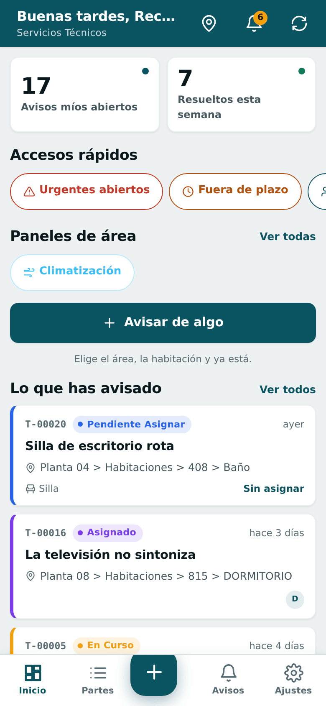
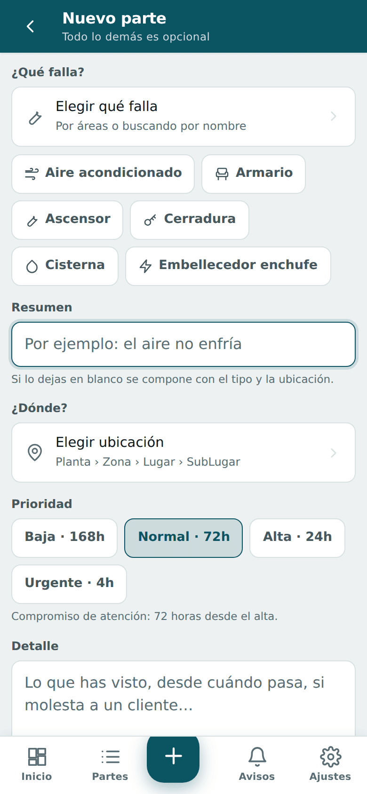
-
Toca el + de la barra de abajo
Desde cualquier pantalla. No hace falta estar en ningún sitio concreto.
-
Di qué falla
Primero la familia —Climatización, Fontanería, Electricidad…— y dentro el tipo concreto. También se puede escribir el nombre y saltarse los dos pasos: «aire» lleva directo a «Aire acondicionado».
Debajo del selector aparecen los seis tipos que más se usan en este hotel. Con el tiempo son casi siempre los que hacen falta, y se eligen de un toque.
-
Rellena lo que pida ese tipo de avería
Cada tipo pregunta lo suyo. El aire acondicionado pide la temperatura marcada, la que hacía en realidad y si ya se han mirado los filtros; una cerradura preguntaría otras cosas.
Lo que lleve un asterisco rojo hay que rellenarlo; lo decide el administrador en Configuración, y el resto es opcional. Cuanto más se rellene, menos vueltas dará el técnico. La diferencia entre «no enfría» y «marcaba 19 y hacía 26, filtros sin mirar» es un viaje a la habitación.
-
Escribe el resumen
Una línea que se entienda leyéndola sola en una lista de cuarenta: «No enfría el aire de la 412». Lo demás va en la descripción.
-
Elige dónde es
Tiene su apartado justo debajo, porque es lo que más se falla.
-
Pon la prioridad
Cada una lleva su plazo al lado, y no es decorativo: es el tiempo que tiene el técnico antes de que el parte salga en rojo.
- Baja · 7d — una semana. Puede esperar.
- Normal · 3d — tres días. Lo de todos los días.
- Alta · 1d — molesta a un cliente ahora mismo.
- Urgente · 4h — hay riesgo, o una habitación no se puede vender.
-
Cuenta lo que has visto
En la descripción: qué pasa, desde cuándo, y lo que haga falta saber antes de subir. «La clienta avisa a las 9:10. El equipo arranca pero sale aire templado. Habitación ocupada hasta el jueves.»
Eso último —que está ocupada— es justo lo que evita que el técnico suba a una hora mala.
-
Los atajos de debajo
Bajo «Elegir qué falla» hay unos cuantos tipos a un toque, para no buscarlos. El administrador decide cuántos salen —de cero a seis— y de dónde: lo más usado en el hotel, lo de tu departamento, lo que más usas tú, o una lista que elige él.
-
Comprueba el departamento y guarda
Se rellena solo según lo que falla: el aire va a Servicios Técnicos. Si te equivocas no pasa nada, un responsable lo mueve en dos toques.
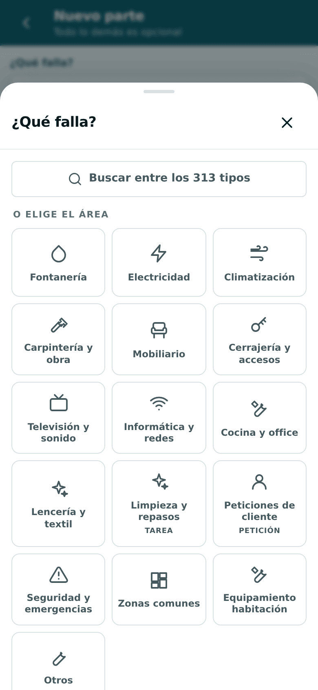
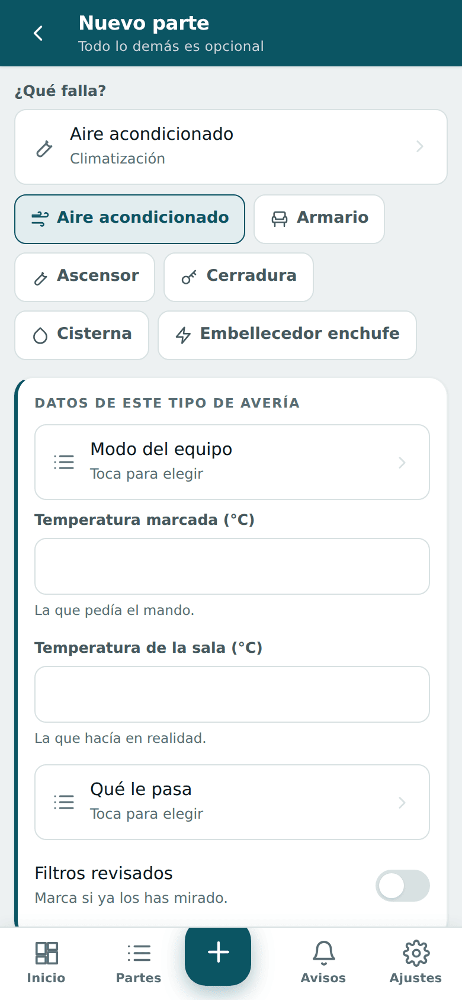
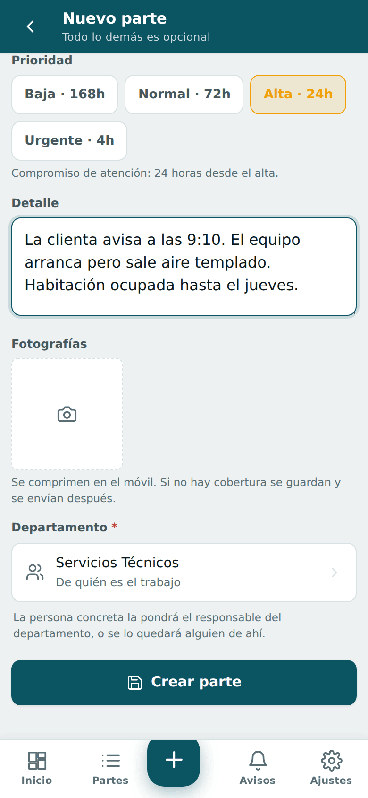
7 Decir dónde es
El hotel tiene 1.285 ubicaciones, del sótano a la terraza. Hay dos formas de llegar a la que buscas, y una es mucho más rápida que la otra.
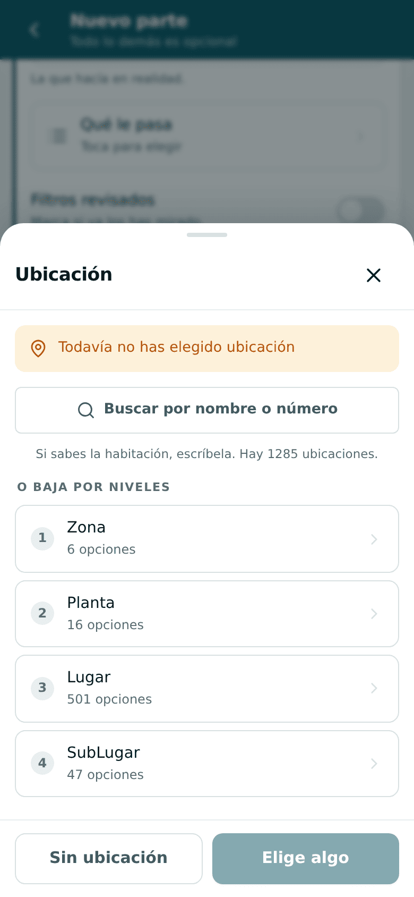
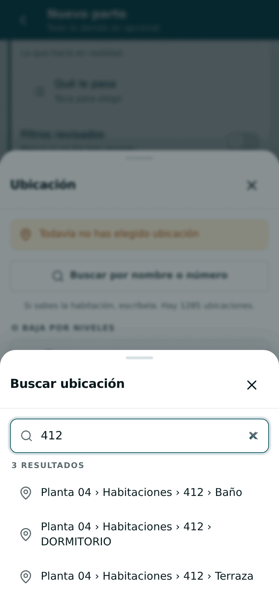
Si sabes la habitación: escríbela
Toca «Buscar por nombre o número» y escribe 412. Salen las tres partes de esa habitación —baño, dormitorio y terraza— y eliges la que toca. Dos toques y a otra cosa.
Vale también el nombre: «cocina», «lavandería», «piscina». Y no distingue tildes.
Si no la sabes: baja por niveles
Cuatro escalones, y se pueden usar en el orden que quieras:
- Zona — habitaciones, cocina, zonas comunes, exteriores…
- Planta — de la 01 a la 16, más sótano y cubierta.
- Lugar — la habitación, el office, la sala de máquinas.
- SubLugar — dormitorio, baño, terraza.
Es útil cuando el aviso llega como «algo en la terraza del restaurante» y hay que ir acotando.
8 Qué pasa después
Le das a «Crear parte» y el trabajo sale de recepción. Esto es lo que ocurre sin que nadie tenga que hacer nada.
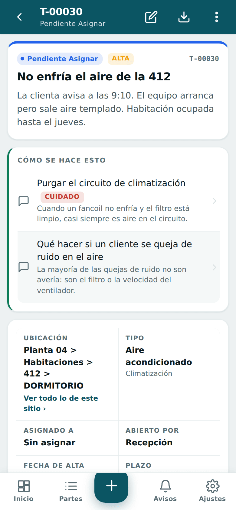
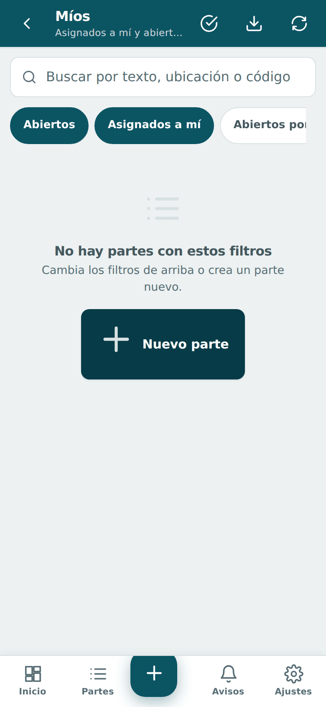
-
Le toca un número
T-00030. Ese número es el que se dice por radio y el que sirve para buscarlo después. Se puede buscar entero, en minúsculas o sólo las cifras.
-
Entra en la cola de Servicios Técnicos
Todavía sin nombre: aparece en «Cola de mi grupo» de David y de cualquiera del departamento. Carlos, como responsable, decide si se lo asigna a alguien o lo coge el primero que quede libre.
-
Suena el aviso en los móviles
Los del departamento reciben la notificación. Si es urgente, además suena distinto.
-
Empieza a correr el plazo
Prioridad alta, 24 horas. A partir de mañana a las 9:10 el parte aparecerá en rojo en «Fuera de plazo», y se mandará un aviso.
-
Recepción lo sigue desde «Avisos»
Sin llamar a nadie ni bajar al taller: ahí se ve el estado, quién lo lleva y las notas que va escribiendo. Cuando se cierra, también.
9 Recibir el trabajo
Seguimos el mismo parte. Ahora está en la cola de Servicios Técnicos y David entra a ver qué hay.
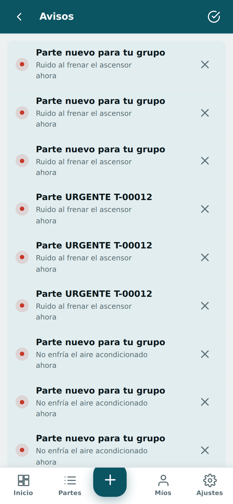
De dónde sale el trabajo
- La campana — avisa de lo que ha llegado. El número rojo son los sin leer.
- «Cola de mi grupo» — lo que ha entrado al departamento y no tiene dueño. De ahí se coge cuando terminas lo tuyo.
- «Asignados a mí» — lo que te ha puesto Carlos con nombre y apellido.
«Me lo quedo»
Es el botón más importante de la ficha. De un toque el parte pasa a tu nombre y todo el mundo lo ve.

10 Trabajar el parte
Mientras se hace el trabajo, la ficha se va llenando. No es papeleo: es lo que permite que otro siga por donde tú lo dejaste, y que dentro de un año se sepa qué se hizo en esa habitación.
Las notas
El botón «Nota» abre una hoja con dos cosas: lo que escribes y cuánto has tardado. Los minutos van con botones —15 min, 30 min, 1 h, 2 h— para no tener que escribir cifras con guantes.
Merece la pena escribir dos: una al llegar, con lo que te encuentras, y otra al terminar, con lo que has hecho. Así:
«Filtro limpiado y desagüe desatascado. Ya enfría. Aviso a Pisos por la humedad de la pared.» — 30 min
Las fotos
El botón «Foto» abre la cámara directamente. Una foto del filtro sucio explica en un segundo lo que en texto son tres líneas —y sirve de prueba si alguien pregunta por qué había que cambiar el equipo.
Se pueden subir varias. Se guardan reducidas para no llenar el móvil ni tardar en cargar.
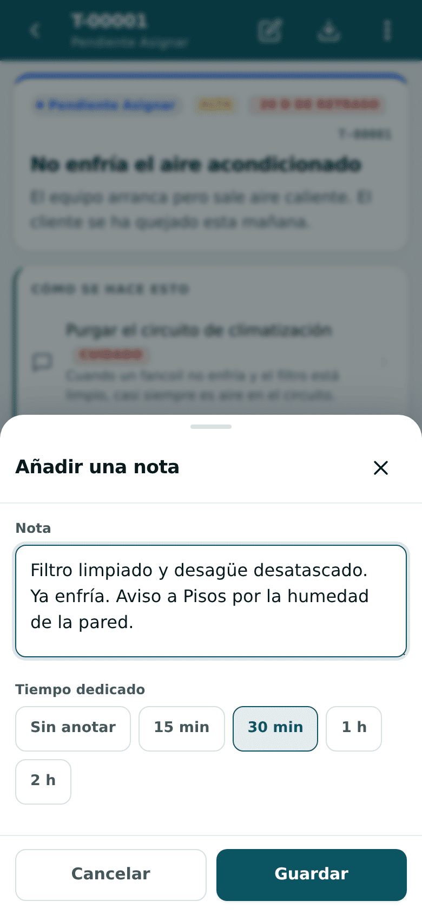
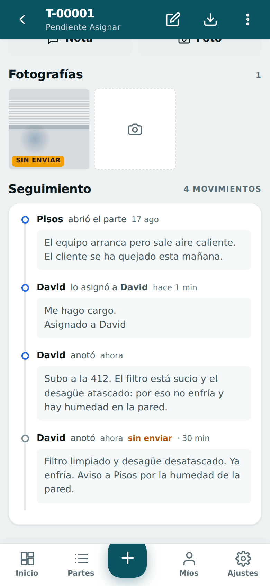
Los estados
«Cambiar estado» dice en qué punto está. Los que no cierran el parte:
- En Curso — lo estás haciendo ahora.
- Programado — tiene día y hora, normalmente porque hay que entrar en una habitación ocupada.
- Pte. Terceros — esperando a una empresa de fuera o a un repuesto.
- Pte. Usuario — esperando a que alguien conteste o deje entrar.
10b Hablar con quien lo abrió
Hay dos formas de entrar: el icono de conversación de arriba, con el número de mensajes sin leer, y la fila «Conversación» dentro del propio parte. Sirve para lo que el seguimiento no cubre: contestarle a quien dio el aviso.
Y cuando alguien te escribe, el aviso te lleva directo a la conversación, no a la ficha: lo que hay que hacer con un mensaje es leerlo y contestar.
El caso típico: recepción avisa de que la caja fuerte de la 801 no va, el técnico sube y resulta que la caja está bien, lo que pasa es que el cliente no sabía cerrarla. Si eso no vuelve a recepción, el parte se cierra y el cliente se queja otra vez.
Al escribir se puede marcar Importante. Entonces el mensaje sale en el inicio de los demás —«1 mensaje importante sin leer»— hasta que alguien lo lea. Es la única forma de que se entere quien abre veinte partes al día y no vuelve a mirarlos.
Debajo de cada mensaje propio pone quién lo ha leído. Eso importa: sin acuse de lectura, «ya te lo dije» no vale para nada.
Sin cobertura se puede escribir igual: el mensaje se queda en el móvil marcado como «esperando señal» y sale solo en cuanto hay línea. Lo que no se ve sin conexión es lo que hayan escrito otros mientras tanto, y la pantalla lo avisa.
11 Cerrarlo bien
Tres estados cierran el parte, y la aplicación lo avisa al elegirlos: «Cierra el parte».
- Resuelta — arreglado. Es el de siempre.
- Cerrado — se da por terminado sin haberlo arreglado: se cambió el equipo entero, o dejó de tener sentido.
- Cancelada — no había avería. Falsa alarma o duplicado.
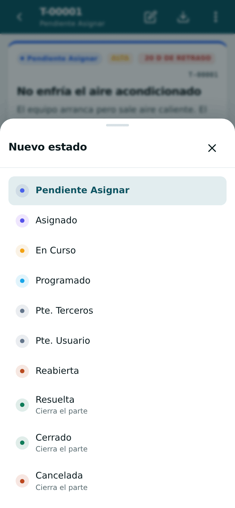
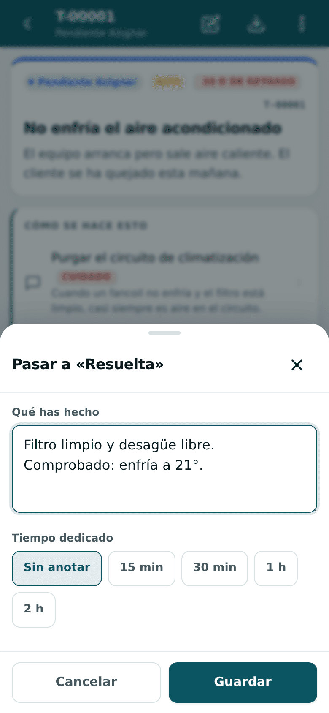
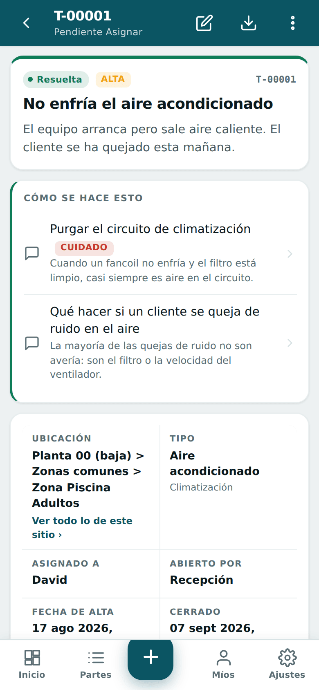
La nota de cierre
Al cerrar, la aplicación vuelve a pedir una nota. No es por insistir: es la que se lee dentro de seis meses, cuando la misma habitación vuelve a dar guerra.
Eso, dentro de un año, dice si el problema volvió o es otro distinto. «Arreglado» no dice nada.
Qué pasa al cerrar
- Sale de las listas de trabajo y deja de contar como pendiente.
- Recepción recibe el aviso de que está resuelto.
- Los minutos se suman al parte y salen en los informes.
- Si vuelve a pasar, se puede reabrir: el estado «Reabierta» está para eso, y conserva todo el historial.
11b Aparcar un parte hasta una fecha
Recepción avisa de que la caja fuerte de la 801 no va, pero el cliente tiene el cartel de no molestar hasta el día 30. El parte no se puede perder, pero tampoco tiene que estar ensuciando la lista de hoy.
Se puede dejar programado al crearlo —en el alta hay un interruptor «Publicarlo más adelante»— o después, cambiando el estado a Programado, que pide el día y la hora: no es lo mismo «el 30 por la mañana» que a las seis de la tarde. A partir de ahí el parte no sale en la lista de quien lo tiene que atender hasta ese día. Sí lo siguen viendo quien lo abrió —para saber que su aviso está registrado— y los responsables, que necesitan ver lo que viene.
Y la fecha se puede mover. El cliente alarga la estancia, la pieza no llega, el gremio cambia el día: en un parte que ya está Programado se vuelve a tocar el estado y se pone otro día y otra hora, tantas veces como haga falta. Cada cambio queda en el historial del parte con quién lo movió, así que al final se ve por qué algo lleva tres semanas esperando.
Es distinto de un mantenimiento programado: aquello se repite solo cada cierto tiempo; esto es para un caso puntual.
11c Cada estado pide lo suyo
Al cambiar de estado ya no se pregunta siempre lo mismo:
- Programado: hasta qué día y por qué.
- Pte. Terceros: a quién se espera, de qué empresa —ofrece las que ya se han usado antes— y qué se está esperando. Así, dos semanas después, se sabe a quién había que llamar.
- Resuelta o Cerrado: qué has hecho y cuánto tiempo.
- Pendiente Asignar o Reabierta: nada obligatorio. Se está devolviendo a la cola, no contando trabajo hecho.
En Ajustes → Conversaciones están todas las conversaciones en las que participas, por orden del último mensaje y con lo que queda sin leer arriba. Sirve para volver a una sin tener que acordarse de en qué parte era.
12 Repartir el trabajo
Carlos es responsable de Servicios Técnicos. Su trabajo no es arreglar: es que a nadie se le quede un parte olvidado y que cada uno tenga lo suyo.
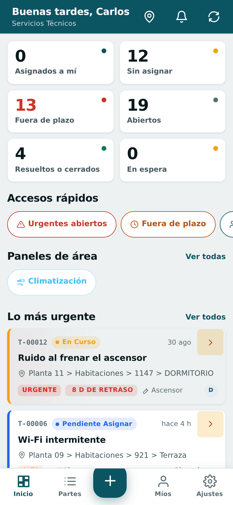
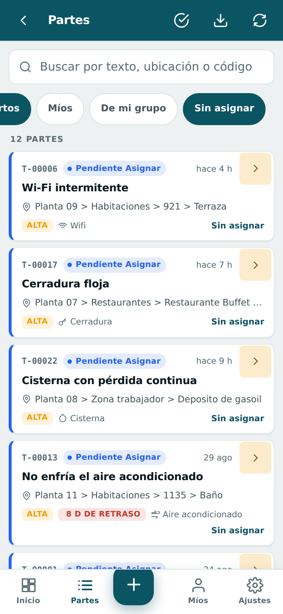
Por dónde empieza la mañana
-
Mira «Fuera de plazo»
En rojo, arriba del todo. Es lo que ya se ha pasado de fecha y hay que resolver o justificar hoy.
-
Luego «Sin asignar»
Lo que entró anoche y nadie ha cogido. De ahí sale el reparto del día.
-
Asigna con nombre
Abre el parte, toca «Asignar» y luego «Quién lo hace». Sale el equipo del departamento, más dos opciones útiles: «A mí» y «Dejar sin asignar», que lo devuelve a la cola.
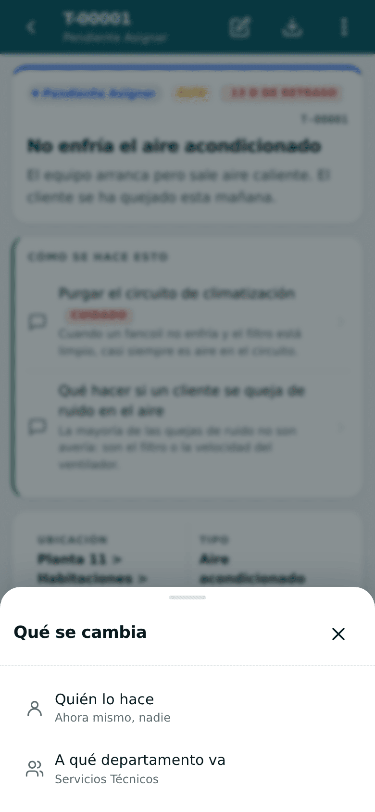
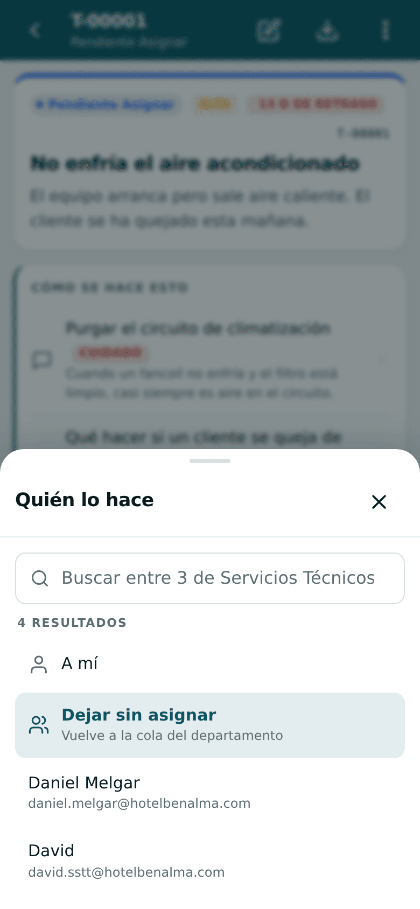
Pasarlo a otro departamento
La otra opción de «Asignar». Recepción da los partes lo mejor que puede, pero una humedad en la pared puede acabar siendo cosa de Pisos y no de Servicios Técnicos. Se pasa en dos toques y le llega el aviso a Fany.
12b Que otro lo siga sin trabajarlo
A veces un parte lo lleva un departamento pero le interesa a otro. La caja fuerte la arregla servicios técnicos, pero recepción necesita seguirlo: es quien da la cara con el cliente.
En Reasignar → Quién lo sigue se puede añadir a una persona o a un departamento entero. Quien lo sigue ve el parte y puede escribir en su conversación, pero no lo trabaja: no cambia su estado ni se lo queda.
Y se entera de todo: recibe aviso al ponerle, y los mensajes de la conversación le llegan como a los demás, con su «sin leer» en el inicio. Para eso se le pone.
La diferencia con darle el departamento adicional a esa persona es importante: el departamento adicional le abre todos los partes del otro departamento; esto, sólo ése.
Lo pone y lo quita un responsable, y queda apuntado en el historial del parte. En la ficha sale un apartado «También lo siguen» —sólo si hay alguien, claro—.
12c Pasarle un parte a otra persona
Cualquiera puede pasar su parte a un compañero de su departamento, a un responsable —cuando se atasca o no le toca— o a otro departamento, si el goteo del lavabo resulta ser del aire acondicionado.
Las tres cosas vienen abiertas de fábrica y se cierran por separado en Configuración → Comportamiento. Y si se cierra una para todos pero hace falta abrírsela a alguien, se hace en su ficha, en Permisos adicionales: lo de la persona manda sobre lo general, y sólo para dar más.
13 Buscar y filtrar
Con cien partes abiertos, encontrar el que buscas es la mitad del trabajo. La pantalla «Partes» tiene dos herramientas: el buscador y los filtros.
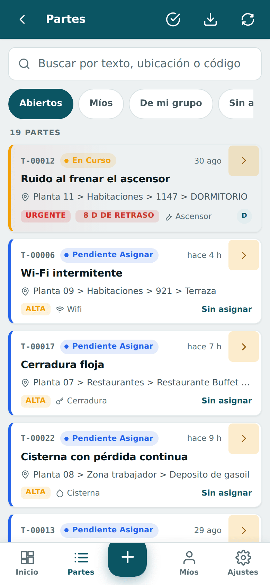
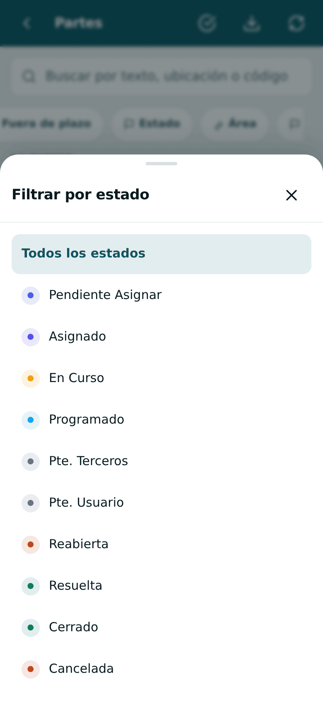
Los filtros rápidos
- Abiertos — todo lo que no está cerrado.
- Míos — los que llevan tu nombre.
- De mi grupo — los del departamento, con dueño o sin él.
- Sin asignar — los que esperan a que alguien los coja.
- Fuera de plazo — los que se han pasado de fecha.
Y cuatro más que abren su propia lista: Estado, Área, Clase y Prioridad. Se combinan entre sí: «abiertos + fuera de plazo + climatización» es una sola pantalla.
El buscador
Busca a la vez en el resumen, la descripción, la ubicación y el número. Y perdona lo que hay que perdonar:
- Sin tildes — «averia» encuentra «avería».
- Sin mayúsculas — da igual cómo se escriba.
- Por número suelto — «24» encuentra el T-00024.
- Por sitio — «412» saca todo lo de esa habitación.
Los atajos
Si repites una búsqueda todas las semanas, se guarda como atajo y aparece en el inicio, bajo «Accesos rápidos». Se crean desde Ajustes → Administración → Atajos, y los crea un administrador.
Ejemplos que funcionan bien: «Climatización sin asignar», «Urgentes de Pisos», «Fuera de plazo de esta semana».
14 Varios partes a la vez
Cuando hay que mover quince partes de departamento o cerrar los del mes, hacerlo uno a uno son quince minutos. Hay dos formas de hacerlo de golpe.
Desde la lista
El botón de la cabecera enciende el modo selección: cada parte se marca al tocarlo y abajo aparece la barra de acciones.
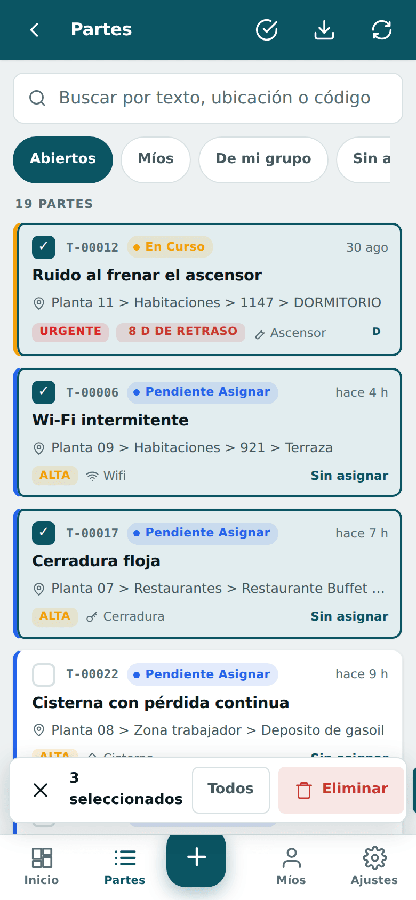
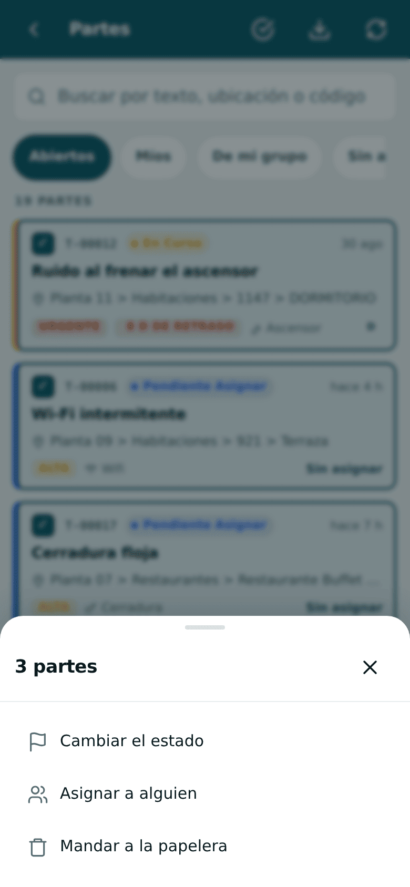
- Cambiar el estado — cerrar de golpe lo que ya está hecho.
- Asignar a alguien — repartir una tanda entera.
- Ocultar de las listas — para duplicados y falsas alarmas. Sólo lo hace un administrador, y queda apuntado en el historial de cada parte.
Desde «Gestión de partes»
En Ajustes → Administración, para administradores. Es la misma idea con más sitio: filtros propios, ordenar por antigüedad y «Marcar todos».
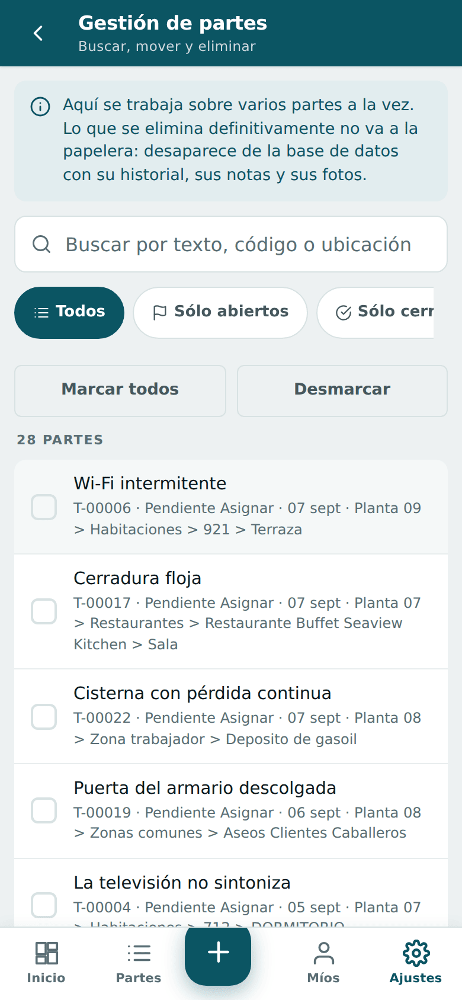
14b Lo mismo en las demás listas
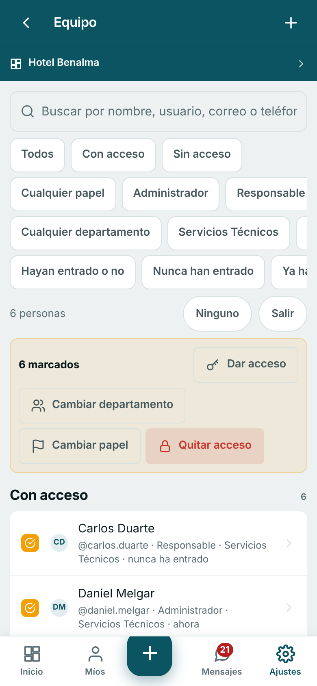
Buscar, filtrar y actuar sobre varios a la vez no es sólo cosa de los partes. Funciona igual —mismo buscador, mismos filtros, mismo «Marcar varios»— en:
- El equipo — se busca por nombre, usuario, correo o teléfono, y se filtra por acceso, papel, departamento y si ha entrado alguna vez. En masa: bloquear, desbloquear, cambiar de departamento y cambiar de papel.
- Las revisiones del mantenimiento preventivo — activar y desactivar varias.
- Las frases del día — activar, desactivar y borrar.
- Los errores y el registro de seguridad — buscar y filtrar; el registro además exporta a Excel sólo lo que estás viendo.
- Importar y exportar personas — buscar y marcar todos.
15 La pantalla de administración
Daniel es administrador de toda la cadena. En Ajustes → Administración tiene todo lo que da forma al sistema. Sólo la ven los administradores: ni Carlos, que es responsable, ni David.
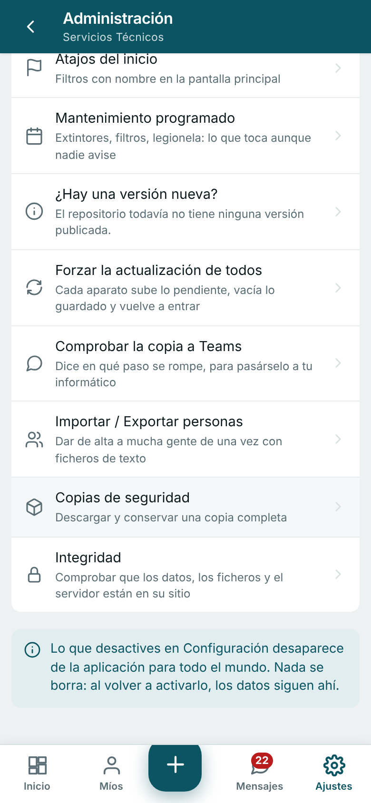
Está en cuatro bloques, y cada entrada dice para qué sirve:
- Hoteles — sólo si hay más de uno.
- Personas — equipo, departamentos, contraseñas olvidadas y el registro de seguridad.
- Catálogos — tipos de avería, familias, ubicaciones y los campos propios de cada tipo.
- Consultar — informes, números de serie e instrucciones.
- El sistema — configuración, atajos, mantenimiento programado y copias de seguridad. En Configuración están también la seguridad —intentos antes de bloquear, días de sesión, enlaces de auto-entrada— y la vista smartphone.
- Integridad — comprueba de una vez que todo está en su sitio (ver abajo).
Comprobar que todo está en su sitio
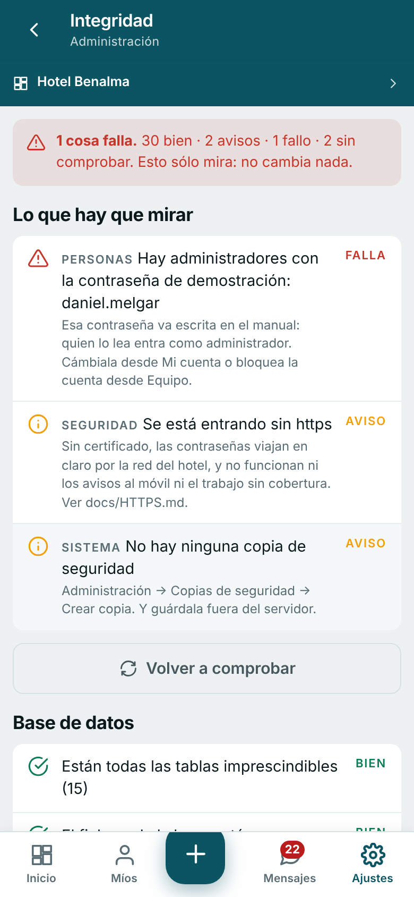
Administración → Integridad repasa más de treinta cosas en un momento: que no haya partes sin hotel ni asignados a alguien que ya no existe, que todas las ubicaciones tengan hotel, que las fotos estén en el disco, que quede espacio, que la última copia de seguridad sea reciente, que el servidor no sirva la base de datos a quien escriba su dirección, que nadie con permisos de administrador use la contraseña de este manual…
Cada línea dice Bien, Aviso, Falla o Sin comprobar, y lo que no está bien explica qué hacer. Lo que falla o avisa sale arriba del todo, en Lo que hay que mirar.
php tools/diagnostico.php hace las mismas comprobaciones y
además mira el certificado.
Tres ajustes del alta que conviene conocer
- Asignar los partes según lo que falla — cada familia lleva su departamento, así que una sábana rota va a Pisos y un enchufe a Servicios Técnicos sin que nadie lo piense. Un tipo concreto puede mandar sobre su familia: la caja fuerte está en Equipamiento de habitación, que es de Pisos, pero la arregla Servicios Técnicos. El reparto se ajusta en Familias.
- Qué hay que rellenar por fuerza — marca los datos sin los que no se puede dar un parte. Lo comprueba también el servidor, así que no se salta desde un móvil sin cobertura.
- Los accesos rápidos — cuántos tipos salen a un toque al dar un parte, y de dónde salen.
16 Dar de alta a alguien
Entra José Ramos de técnico en Servicios Técnicos. Son dos minutos.
-
Administración → Equipo → el +
Arriba a la derecha.
-
Correo y contraseña
El correo del hotel: es con lo que entrará y no se puede repetir. La contraseña, mínimo ocho caracteres — se le dice y él la cambia luego desde su Ajustes.
-
Nombre y apellido
Salen en los partes y en los avisos. Con el nombre basta si en el hotel no hay dos iguales.
-
El papel, de un toque
Cuatro botones: Administrador, Responsable, Técnico y Sólo avisar. Se puede cambiar después.
-
El departamento
Es lo que decide qué partes ve. Más importante que el papel: un técnico de Pisos no toca los de Servicios Técnicos.
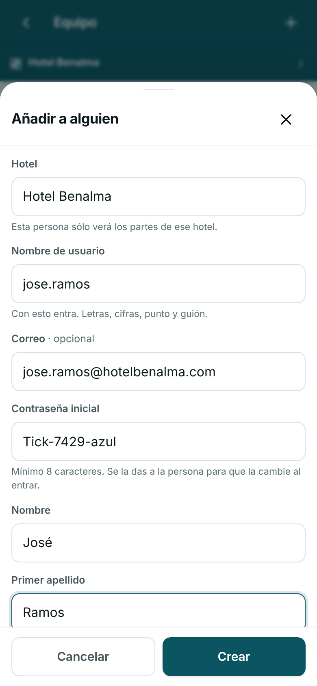
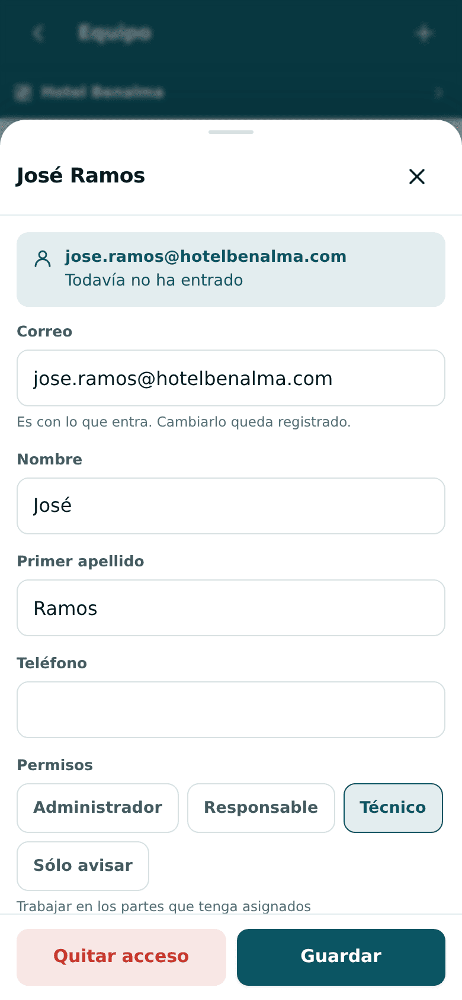
Cuando alguien se va
Se usa «Quitar acceso», no borrar. La cuenta deja de entrar pero su trabajo sigue en los partes: las notas que escribió, las fotos que subió y su nombre en el historial.
Si alguien no puede entrar
- Cuenta bloqueada — se pasó de ocho intentos. Se suelta sola en quince minutos, así que muchas veces basta con decirle que espere; si tiene prisa, se desbloquea desde su ficha. Ojo: a esa persona la aplicación le sigue diciendo «usuario o contraseña incorrectos», no «bloqueada» —si lo dijera, cualquiera podría averiguar quién tiene cuenta probando nombres—, así que puede llamarte convencida de que su contraseña ha dejado de valer.
- No se sabe la contraseña — en «Contraseñas olvidadas» se le genera un código de seis cifras, válido una hora, y se le dice de viva voz.
16b Dar de alta a mucha gente de golpe
Para abrir un hotel, o para la temporada: cuarenta altas una por una en el móvil no es trabajo de persona. Se hace con ficheros de texto, desde Ajustes › Administrar el sistema › Importar y exportar personas.
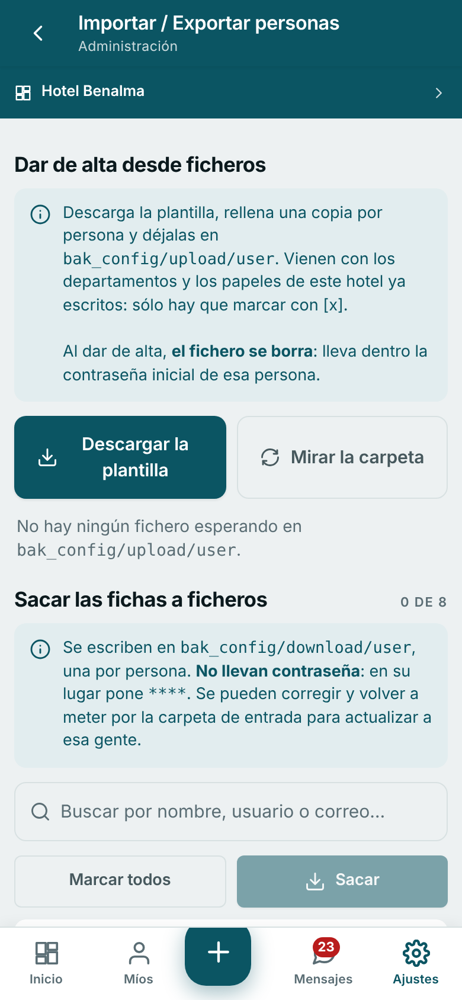
La plantilla ya viene rellena
Lo primero es descargar la plantilla. No es una hoja en blanco donde
haya que adivinar qué se escribe: trae los valores de este hotel ya
puestos —sus departamentos, sus permisos, sus hoteles— y se elige
marcando con [x] y dejando [ ] el resto:
Departamento: # Marca uno: el suyo, donde trabaja. [ ] Cocina / A&B [x] Servicios Técnicos [ ] Recepción
Las líneas que empiezan por # son explicaciones y no se leen.
Lo que se deje en blanco se queda sin poner. Las etiquetas no se tocan.
Lleva todo lo de una ficha: hotel, nombre de usuario, correo, contraseña inicial, nombre, primer y segundo apellido, teléfono, papel, departamento y departamentos adicionales, los cuatro permisos sueltos —modo sin cobertura, asignar a un compañero, a un responsable y a otro departamento—, el mensaje de bienvenida, el aviso para el próximo inicio y si se le enseña la frase del día.
Cómo se usa
-
Una copia por persona
Se rellena la plantilla y se guarda una copia por persona en
bak_config/upload/user/, con cualquier nombre que acabe en.txt:marta.txt,jose.txt. -
Primero en vacío
Hay un botón para probar sin dar de alta a nadie: dice qué haría con cada fichero y qué líneas no entiende. Con cuarenta altas, esto se hace siempre antes.
-
Dar de alta
Recorre los ficheros y crea —o actualiza, si ese usuario ya existe— cada persona, con su departamento, sus permisos y su mensaje de bienvenida. Al final dice una línea por fichero: creada, actualizada o por qué no.
.txt con
contraseñas olvidado en una carpeta del servidor es un problema que
espera. Si el alta falla, el fichero se queda para poder corregirlo.
Exportar
En la otra dirección, se pueden sacar las fichas a
bak_config/download/user/, una por persona, en el mismo
formato que la plantilla. Se marcan en la lista —hay un
«marcar todos»— y se bajan de una vez.
La contraseña no se exporta nunca: en su sitio aparece
****. Y eso es justo lo que hace que una ficha exportada se
pueda volver a importar sin romper nada: al encontrar **** no
se toca la contraseña que esa persona tenga puesta.
17 Los departamentos
Son comunes a toda la cadena, y eso es a propósito: así un informe de varios hoteles cuadra. Lo que elige cada hotel es cuáles usa y cómo los llama en casa.
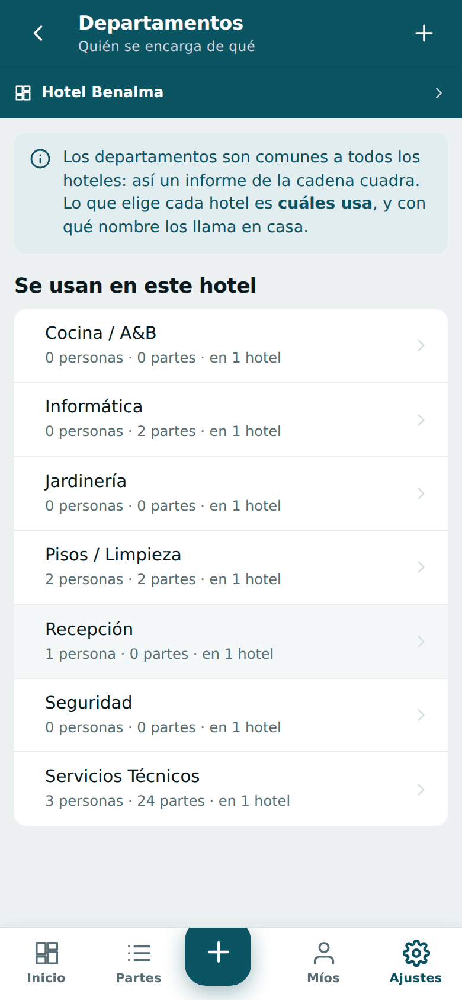
- Crear y renombrar — sólo un administrador. El nombre es el que sale en los informes de todos los hoteles.
- El alias — cada hotel puede llamarlo distinto en su casa: «Servicios Técnicos» en uno y «Mantenimiento» en otro. Los informes siguen cuadrando porque por dentro es el mismo.
- Quitar uno del hotel — si tiene partes o gente, avisa antes.
18 Montar las ubicaciones
Es lo que más trabajo da al empezar, y hay una herramienta para no morir en el intento: crear habitaciones por rango.
Los cuatro niveles
Planta → Zona → Lugar → SubLugar. «Planta 04 › Habitaciones › 412 › Baño». Se pueden montar a mano uno a uno, pero para las habitaciones no hace falta.
Una planta entera de una vez
En Ubicaciones → Crear habitaciones por rango. Ejemplo real: la planta 5, de la 501 a la 520, saltando la 513.
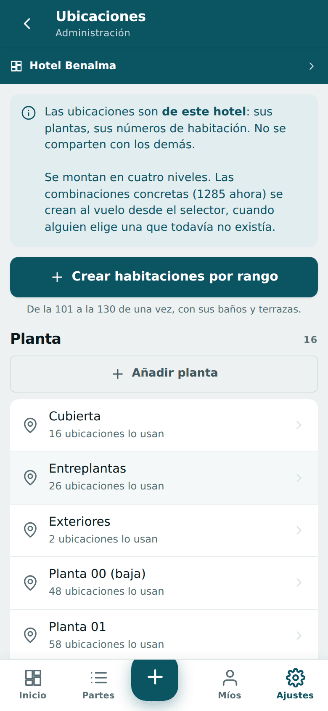
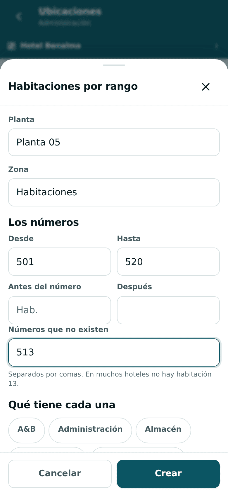
- Desde / Hasta — 501 y 520.
- Saltar — «513», separadas por comas. En muchos hoteles no hay habitación 13, y ponerla es un problema el día que alguien la busca.
- Prefijo y sufijo — para que salgan como «Hab. 501» si así se llaman en casa.
- Sublugares — crea de golpe el baño, el dormitorio y la terraza de cada una.
Varios hoteles
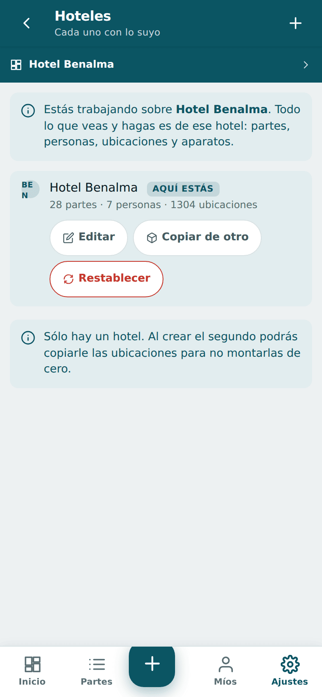
Al crear el segundo hotel se le pueden copiar las ubicaciones del primero, que en cadenas con edificios parecidos ahorra días de trabajo.
19 Mantenimiento preventivo
Lo que hay que hacer aunque nadie avise: extintores, filtros, legionela, alumbrado de emergencia. Se programa una vez y el sistema crea el parte cuando toca.
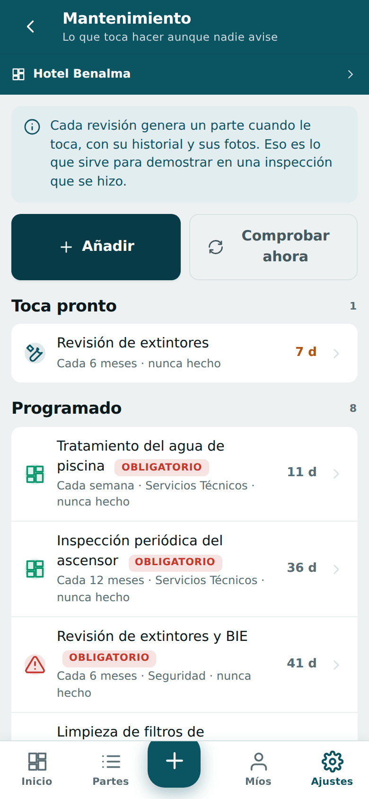
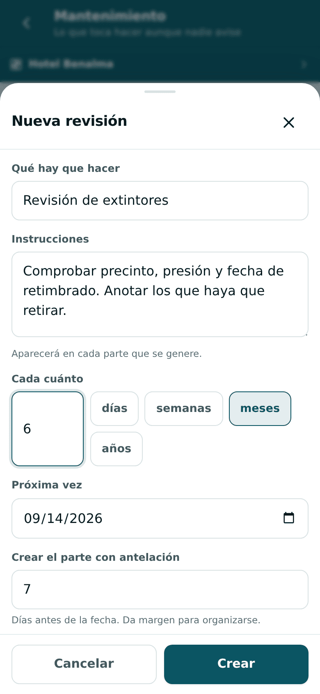
Programar una revisión
-
Ponle nombre y di qué comprobar
La descripción es la que leerá el técnico dentro de seis meses: «Comprobar precinto, presión y fecha de retimbrado. Anotar los que haya que retirar.»
-
Cada cuánto
Un número y una unidad: días, semanas, meses o años.
-
Con cuántos días de aviso
El parte se crea antes de la fecha, para que dé tiempo a organizarse. Siete días va bien para casi todo.
-
Hasta cuándo se repite
Esto es opcional, y es lo que evita que una revisión siga saliendo cuando ya no toca. Dos formas de ponerle fin:
- Un número de veces — «cuatro revisiones y se acabó». Sirve para el año de garantía de un aparato, o para un contrato que cubre un número cerrado de visitas.
- Una fecha final — «hasta el 31 de diciembre». Sirve para lo de temporada: la analítica de la piscina no hace falta en enero.
Si no pones ninguna de las dos, se repite indefinidamente, que es lo normal para un extintor o una caldera.
-
Área, sitio y quién
Todo opcional. Si no pones a nadie, el parte cae en la cola del departamento como cualquier otro.
«Comprobar ahora»
Normalmente no hace falta tocarlo: hay una tarea que lo mira sola cada noche. El botón sirve para adelantarse.
Y no crea nada sin enseñarlo antes: primero dice qué partes va a crear y pide confirmación.
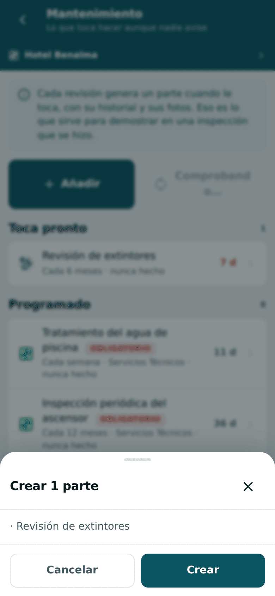
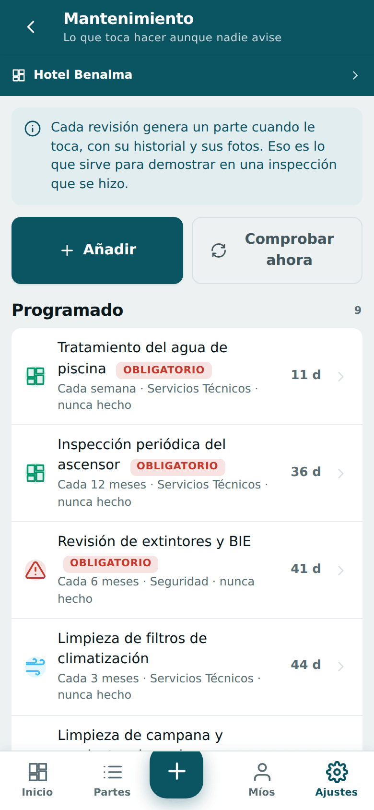
20 Las instrucciones
Cómo se hacen las cosas en este hotel. Lo que sabe el que lleva quince años, escrito para el que entró el lunes.
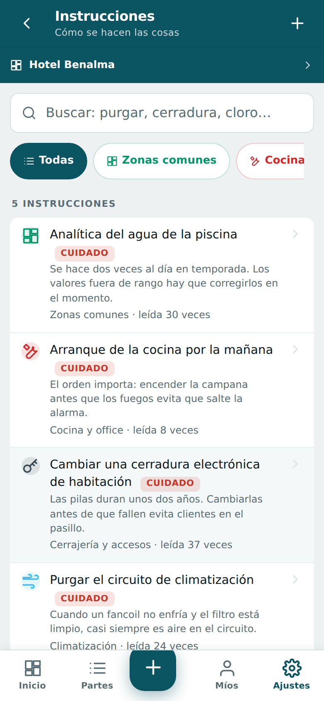
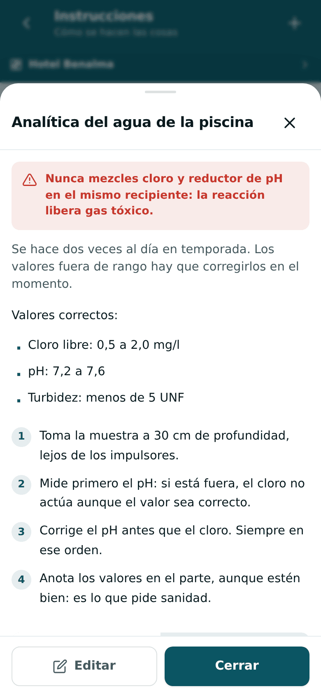
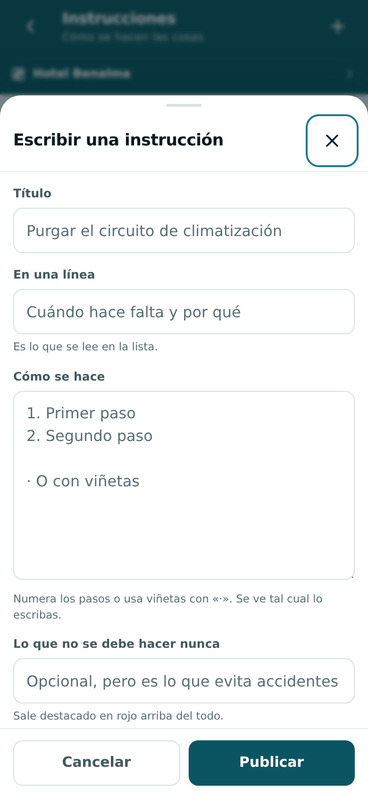
Dónde aparecen solas
Esto es lo que las hace útiles: salen en la ficha del parte, bajo «Cómo se hace esto», sin que nadie vaya a buscarlas. Llegan por la familia del tipo de avería: un parte de aire acondicionado ofrece las de Climatización.
Dos maneras de escribirla
Arriba de la lista hay dos botones, y la diferencia es el tipo de cosa que vas a escribir:
- Nota rápida — cuatro pasos escritos a mano. Para esto no hay editor que gane a un teclado: se numeran las líneas y ya está. Es el editor de siempre, y no se va a ninguna parte.
- Manual con fotos, pasos y vídeo — para lo que de verdad hay que enseñar: dónde está el tornillo, de qué color es el cable, cómo suena la bomba cuando va mal.
Se puede cambiar de uno a otro a mitad de escritura. Al pasar de sencillo a manual, las líneas numeradas se convierten en pasos y no se pierde nada. Al revés sí se pierde —una foto no cabe en un cuadro de texto—, así que avisa antes de hacerlo y deja volverse atrás.
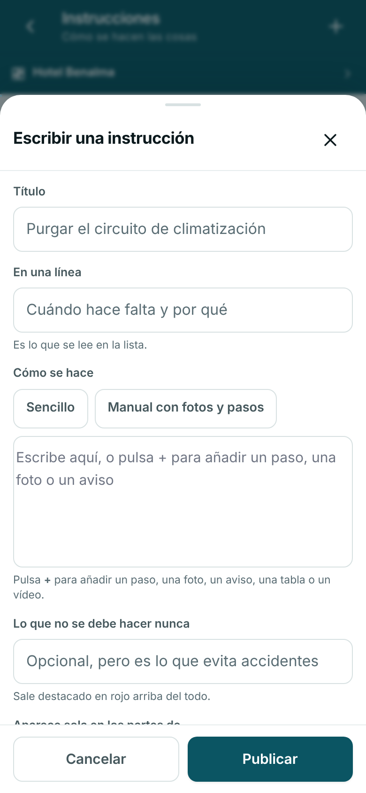
Qué se puede poner en un manual
- Pasos numerados, que se renumeran solos al mover uno.
- Fotos, desde la galería o la cámara, con su pie de foto.
- Un recuadro de aviso, para lo que no se debe hacer.
- Tablas: valores de referencia, presiones, pares de apriete.
- Títulos de apartado, para un manual largo.
- Vídeo, de dos formas (abajo).
El vídeo
- Subido — queda en el hotel y se ve sin cobertura, que es donde hace falta. A cambio ocupa disco y entra en las copias de seguridad, así que hay un tope de tamaño que un administrador puede bajar. Para un clip de medio minuto enseñando una maniobra es lo suyo.
- «Vídeo de fuera» — un enlace de YouTube o Vimeo. No ocupa nada, pero hace falta internet para verlo: en un sótano no sirve.
Consejo práctico: grábalo corto y a 720p. Un minuto bien enfocado enseña más que cinco de paseo, y pesa cinco veces menos.
Lo que se rellena en las dos
- Título — «Purgar el circuito de climatización».
- Resumen — cuándo hace falta y por qué. Es lo que se lee en la ficha del parte antes de abrirla.
- Los pasos — numerados, cortos, en el orden que se hacen.
- El aviso — opcional, y es lo que evita accidentes: «No purgues con la bomba en marcha», «Nunca mezcles cloro y reductor de pH: la reacción libera gas tóxico». Sale destacado, antes que los pasos.
- Etiquetas — para encontrarla buscando: «purgar, fancoil, no enfría».
21 Aparatos con número de serie
Para el equipamiento que importa seguir: televisores, aires, cerraduras, ascensores. Saber dónde está cada uno y qué le ha pasado.
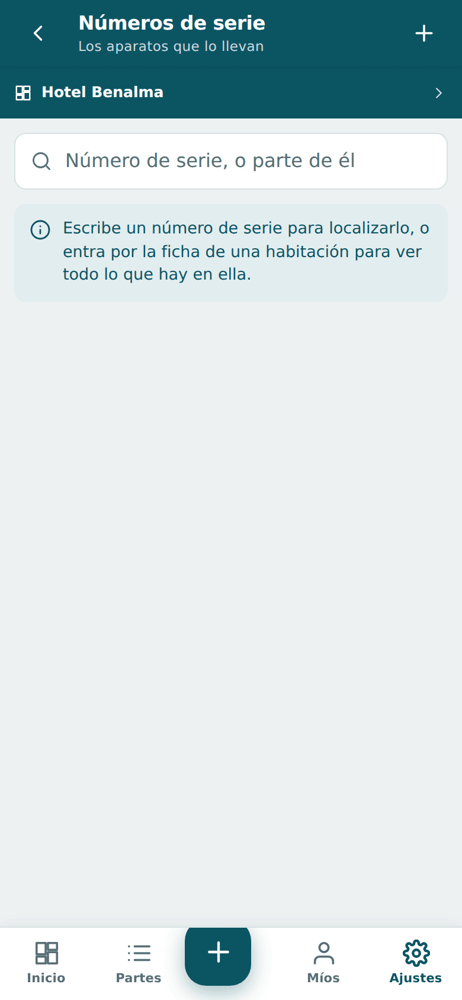
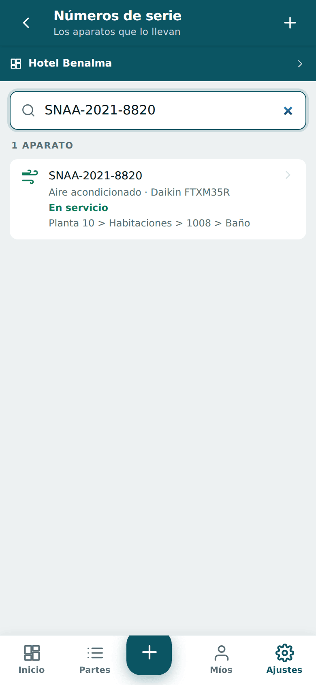
Por qué empieza vacía
Cuando buscas un aparato estás delante de él, con la etiqueta a la vista. Una lista de cientos de televisores no ayuda; escribir el número sí. Y vale con un trozo, que es lo que se lee cuando la pegatina está medio borrada.
Qué cuenta su ficha
- Estado — en servicio, en reparación o de baja.
- Tipo y modelo — «Aire acondicionado · Daikin FTXM35R».
- Dónde está — la ubicación completa, y desde cuándo.
- Su historia — alta, traslados, averías con su parte, y la baja con su motivo.
- Sus partes — se abren desde ahí mismo.
22 Los informes
Dos preguntas y ya hay informe: qué quiero medir y agrupado por qué. Lo demás son condiciones para acotar.
Qué se puede medir
- Número de partes — cuántas averías.
- Minutos dedicados — cuánto tiempo se ha ido. Sale de las notas con minutos.
- Coste total — si se apuntan costes.
- Horas medias hasta el cierre — lo que se tarda de verdad.
- Porcentaje resuelto en plazo — el que enseñar en una reunión.
Agrupado por qué
Veinticuatro formas, y las interesantes suelen ser tres:
- Por lugar / habitación — dice qué habitación da guerra.
- Por familia o tipo de avería — qué se rompe más.
- Por mes — si vamos a mejor o a peor.
Y también por los campos propios de cada tipo: se puede agrupar por «Filtros revisados» y ver cuántas averías de aire eran, en realidad, un filtro sucio.
Sacarlo a Excel
El botón «Exportar» baja un CSV que abre en Excel con los acentos bien y las columnas separadas. Es lo que se manda a dirección.
Guardar un informe. Cuando uno queda como interesa, se guarda con nombre, y se elige quién lo verá: sólo yo, mi departamento o todo el equipo. Lo último lo deciden los responsables: una lista que puede llenar cualquiera deja de servir en dos semanas.
Se puede filtrar por cualquier dato del parte —estado, tipo, sitio, quién lo lleva, fechas, rangos de fecha, «últimos treinta días»— y también por los datos propios de cada avería.
22b Si algo se repite
Al final de cada parte hay un bloque: «Ya ha pasado aquí». Enseña qué más ha ocurrido con ese mismo tipo de avería en ese mismo sitio, y aparte, en el resto del hotel.
Sirve para lo de siempre: la 214 lleva tres partes de aire acondicionado en dos meses, así que el problema no es el aire, es otra cosa. Abajo, «Ver el historial completo» abre Informes con ese tipo de avería ya filtrado y agrupado por sitio.
Sólo salen los partes que esa persona puede ver: no es una rendija para leer los de otro departamento. Se apaga desde Configuración → Comportamiento.
22c Datos propios de cada avería
Hay averías que piden datos que al resto no le sirven. En un aire acondicionado importa la temperatura de la sala, si el mando responde y cómo están los filtros; en una puerta que no cierra, nada de eso significa nada.
Por eso, al elegir Aire acondicionado o Fan coil, el parte pide además esos datos, y sólo entonces. Vienen de fábrica cinco: temperatura de la sala, temperatura pedida, qué hace, estado de los filtros y si se ha mirado el gas. Las calderas y los grifos preguntan la presión del agua.
Después se pueden cruzar en Informes: «media de temperatura por planta» o «cuántos partes con los filtros muy sucios». Los campos los crea y los quita el superadministrador, en Administración → Campos por tipo de avería; son comunes a todos los hoteles de la cadena.
Si se retira un campo, los datos ya escritos no se pierden y los informes que lo usaban siguen funcionando: aparece marcado como «retirado».
22d Saber si la habitación está ocupada
Si el hotel tiene conectado su sistema de recepción, al elegir la habitación en un parte aparece qué hay dentro ahora mismo: si está ocupada, en qué estado está y —según lo que cada uno pueda ver— quién duerme allí, de qué país es y hasta cuándo se queda.
Eso último importa más de lo que parece: saber que el cliente de la 214 es alemán te dice en qué idioma llamar a la puerta, y saber que se va mañana te dice si conviene entrar hoy o esperar.
Cuando la habitación está ocupada sale además un aviso: avisa a recepción antes de subir.
No todo el mundo ve lo mismo. Cada dato —la ocupación, el estado, el nombre, el país, las fechas— se abre a quien decida la dirección, y el resto no lo recibe siquiera. Si el sistema de recepción está caído, el bloque no aparece y el parte se da igual: nunca se deja de dar un parte porque falle otro programa.
Se consulta también sin dar un parte, desde Ajustes → SAP: una habitación suelta o un rango entero.
23 Copias de seguridad
Un botón. Baja un fichero con todo dentro: partes, historial, personas, ubicaciones, catálogos y ajustes.
- Crear copia — los datos, comprimidos. Pesa poco.
- Con fotos — además un zip con las imágenes. Pesa mucho más.
Antes de restaurar una copia conviene cerrar el acceso —en Configuración— para que nadie escriba a la vez. Quien esté sin cobertura puede seguir trabajando: lo que tenga pendiente sube igual, y baja cuando se reabre.
24 Ocultar, eliminar y la papelera
Son dos cosas distintas y conviene no confundirlas, porque sólo una tiene vuelta.
Ocultar de las listas
El parte deja de verse en la aplicación. Sigue en la base de datos con todo su historial y se recupera desde Administración → Gestión de partes, marcando «ver también los ocultos»
Eliminar definitivamente
El parte sale de la base viva —deja de contar en listados, informes y recuentos— y entra en la papelera, que es una base de datos aparte. Sólo lo puede hacer un administrador.
La papelera
- Guarda quién lo borró y cuándo, con todos los datos que tenía.
- «Devolverlo» lo trae de vuelta con su número, su historial, sus fotos y sus campos.
- «Tirarlo» lo borra del todo, fotos incluidas. Eso ya no vuelve.
- Se vacía sola pasados los días que se configuren — 180 por defecto.
24b Dejar un hotel a cero
Es para dos situaciones concretas: terminar las pruebas y empezar de verdad, o abrir un hotel nuevo partiendo de la copia de otro. Está en Ajustes › Hoteles › Restablecer, y sólo lo ve un administrador.
No es un botón único: se marca qué se borra, cada cosa por separado, porque vaciar las conversaciones no tiene nada que ver con tirar la auditoría.
- Los partes, con sus notas, fotos e historial.
- Las personas — menos tú, que no te puedes borrar a ti mismo.
- Los avisos y las conversaciones de todo el mundo.
- Las revisiones del mantenimiento preventivo.
- El registro de errores.
- El registro de seguridad — piénsalo: es la auditoría, y eso no se reconstruye.
- Lo que cada uno se ha configurado: su barra de abajo, sus avisos, sus atajos y sus informes guardados. No se tocan sus permisos ni su departamento, que es cómo trabaja y no una preferencia.
- Vaciar la papelera.
25 El registro de seguridad
Quién entra, desde dónde y qué cambia. Se mira poco, pero el día que hace falta no hay sustituto.
Qué queda anotado
- Entradas y fallos — con la dirección desde la que se intentó.
- Cambios de contraseña, correo y papel — de quién y por quién.
- Ajustes del sistema — con el valor antes y después.
- Borrados definitivos y copias de seguridad.
Se conserva 90 días por defecto, y se puede filtrar por tipo o quedarse sólo con los fallos. Un montón de intentos fallidos seguidos, de madrugada y desde una dirección rara, es exactamente lo que hay que poder ver.
26 Trabajar sin cobertura
En un sótano, una cámara frigorífica o el hueco del ascensor no hay cobertura. La aplicación está hecha contando con eso: se sigue trabajando igual.
Qué se puede hacer sin red
- Dar partes — con foto y todo.
- Escribir notas y minutos.
- Cambiar estados y cerrar partes.
- Buscar — la búsqueda se hace en el propio móvil.
- Leer las instrucciones — que es justo donde hacen falta.
Cómo saber si algo está pendiente
La tira de arriba lo dice, y cada parte pendiente lleva una nube en su tarjeta. En cuanto hay una raya de cobertura, sube solo: no hay que acordarse de nada ni pulsar ningún botón.
27 Cuando dos cambian lo mismo
Pasa poco, pero pasa: David cambia el estado de un parte sin cobertura y, mientras tanto, Carlos lo cierra desde su móvil. Al volver la red hay dos versiones del mismo dato.
Qué hace la aplicación
Lo que no hace es decidir por su cuenta. Tu cambio se guarda sin aplicar y sale un aviso arriba. En la pantalla de conflictos se ve todo:
- En el servidor — «Resuelta».
- Tu cambio — «En Curso».
- Quién y cuándo — «Lo cambió Carlos Duarte el 8 de septiembre a las 6:44».
- Y tu nota, para que recuerdes qué ibas a hacer.
Dos salidas, y las dos son válidas: «Quedarme con el suyo» o «Aplicar el mío». También se puede abrir el parte completo antes de decidir.
28 Los avisos
La campana de arriba y, si se activan, los avisos que llegan con la aplicación cerrada.
De qué avisa
- Un parte nuevo en tu departamento.
- Uno que te asignan a ti.
- Una nota en algo tuyo.
- Algo que se pasa de plazo.
- Un parte urgente, que además suena distinto.
Con la aplicación cerrada
Hay que activarlo una vez por móvil, y el teléfono pedirá permiso. Si alguna vez se dijo que no, hay que volver a permitirlo en los ajustes del navegador — la aplicación no puede hacerlo sola, y lo avisa.
Sonido y vibración
Se ajustan por aparato: el sonido se puede apagar sin perder la vibración, que es lo que sirve con el móvil en el bolsillo o en una zona ruidosa.
29 Hablar por la aplicación
Una sola pantalla con todo lo que hay que leer: las conversaciones de los partes y los avisos, lo no leído arriba. Es la pantalla «Mensajes» de la barra de abajo.
Qué es y qué no es
Cada conversación cuelga de un parte. No es un chat libre para hablar de cualquier cosa: se habla de la avería del 801, y por eso lo que se dice queda donde hace falta dentro de seis meses, junto al parte y no perdido en un hilo.
Lo que cambia es que ya no hay que entrar en cada parte para ver si alguien ha escrito. Antes había que acordarse de mirar; con cincuenta personas hablando, lo urgente se quedaba sin leer porque estaba a tres toques de distancia.
Las dos pestañas
- Conversaciones — un parte por línea, con lo último que se dijo y quién lo dijo. Las que tienen algo sin leer van primero.
- Avisos — lo que antes estaba en la campana: partes nuevos, asignaciones, plazos. Al tocar uno se abre su parte.
El número de la barra de abajo
Suma las conversaciones con algo sin leer y los avisos sin leer: cuántas cosas tienes que atender, sin que importe de qué cajón vienen. Una conversación con seis mensajes nuevos cuenta una, no seis — cuántos hay dentro se ve en su propia chapa, al lado de cada línea. Cuando se queda en cero, está todo leído.
Marcar un mensaje como importante
Un mensaje se puede marcar como importante al escribirlo. Entonces sale en el inicio de quien tiene que leerlo, aunque no entre en el parte. Es para lo que no puede esperar: «no toquéis el cuadro de la piscina, está sin tensión».
La copia a Microsoft Teams
Si el hotel ya trabaja con Teams, HuraKan Tick puede mandar una copia del aviso al chat privado de cada persona en Teams, con un enlace que abre el parte. No sustituye a nada: el aviso sigue estando en la aplicación, y la copia es para quien tiene Teams siempre abierto y la aplicación no.
- Se enciende en Ajustes › Administrar el sistema › Teams, y pide
los datos que da el informático: tenant, aplicación y secreto. Están
explicados paso a paso en
docs/TEAMS.md. - Hay un interruptor «Sólo los urgentes», que es lo que querrás casi siempre: una copia de todo acaba en ruido, y el ruido se ignora.
- Se puede quitar persona a persona desde su ficha en el equipo: quien no use Teams no tiene por qué recibir nada.
30 Ajustar la pantalla
En Ajustes → Apariencia. Sólo cambia tu móvil: nadie más lo nota.
- Tamaño de la letra — cuatro tamaños, de pequeña a enorme. Crece todo, no sólo los textos: los botones también.
- Espacio entre las cosas — en compacto cabe casi una tarjeta más por pantalla; en amplio se acierta mejor con el dedo.
- Detalle de cada parte — cuánta información se ve sin abrirlo.
- Claro y oscuro — el oscuro va bien de noche y en cuartos de máquinas.
Vista smartphone
En un ordenador o una tableta, la aplicación puede verse dentro de un teléfono centrado en la pantalla. Sirve para ver desde el despacho exactamente lo que ve el técnico en su móvil, y para enseñar la aplicación sin tener que prestar uno.
Lo decide un administrador en Ajustes → Administración → Vista smartphone, con cuatro modos:
- No — como siempre. Es lo que viene puesto.
- Sí, para todos — todo el mundo la ve así y nadie puede quitarla.
- Habilitada y activada — sale puesta, y cada uno puede quitársela.
- Habilitada sin activar — sale quitada, y cada uno puede ponérsela.
Cuando se deja elegir, en Ajustes → Apariencia sale el interruptor y la forma del teléfono: 9:16, que es la de los móviles de antes; 9:19,5, la de un iPhone; o 9:20, la de un Android actual. El cambio de forma se ve al momento, sin recargar.
Cuando subes una versión nueva
Cada móvil guarda la aplicación para funcionar sin cobertura, así que puede seguir con la versión anterior aunque el servidor ya tenga la nueva. En Administración → Forzar la actualización de todos se arregla de una vez: cada aparato, la próxima vez que tenga conexión, sube lo que tenga sin enviar, vacía lo guardado, cierra la sesión y vuelve a descargarlo todo.
El orden importa y está pensado: un móvil con partes escritos en el sótano no vacía nada hasta haberlos subido. Habrá que volver a identificarse, y la pantalla de entrada explica por qué.
Mensajes y frase del día
En la ficha de cada persona, dentro de Equipo, hay tres cosas que salen en su pantalla de inicio, cada una con su aspa para cerrarla:
- Mensaje de bienvenida — una sola vez, la primera vez que entra. Viene apagado.
- Aviso para el próximo inicio — se enseña una vez y desaparece; al escribir otro, se vuelve a enseñar.
- Frase del día — una distinta cada día, sin repetir. Las frases se escriben en Ajustes → Frases, agrupadas en categorías, y a cada persona se le asignan las que quieras. Si no eliges ninguna, valen todas.
Iconografía
En Ajustes → Iconografía, un administrador puede cambiar cualquier icono de la aplicación por otro de Font Awesome: hay mil cuatrocientos, y van dentro de la aplicación, así que se ven también sin cobertura.
Se cambian los iconos de la aplicación, los de las áreas y los de los más de trescientos tipos de avería, uno a uno y con buscador. El sistema sugiere por el nombre: a «Limpieza y repasos» le ofrece una escoba, y a «Cisterna», un inodoro. El cambio lo ve todo el hotel, y con «Dejarlo todo como estaba» se vuelve a los de siempre de una vez.
30b Cuándo se actualiza la pantalla sola
El inicio y las listas se ponen al día solos cuando llega algo nuevo, para no tener que recargar a mano. La ficha de un parte, la conversación y los formularios no: ahí la pantalla sólo cambia si tú haces algo.
Mientras escribes no se refresca nunca. Si llega una actualización mientras tienes un mensaje a medias, se queda esperando y se aplica cuando sueltas el teclado. Lo escrito no se pierde.
Si aun así prefieres que la pantalla no se mueva nunca sin pedirlo, se apaga en Configuración → Comportamiento → «Refrescar la pantalla sola al sincronizar». Lo que tú hagas se sigue viendo al momento.
No hay nada con esa palabra en esta parte de la guía.